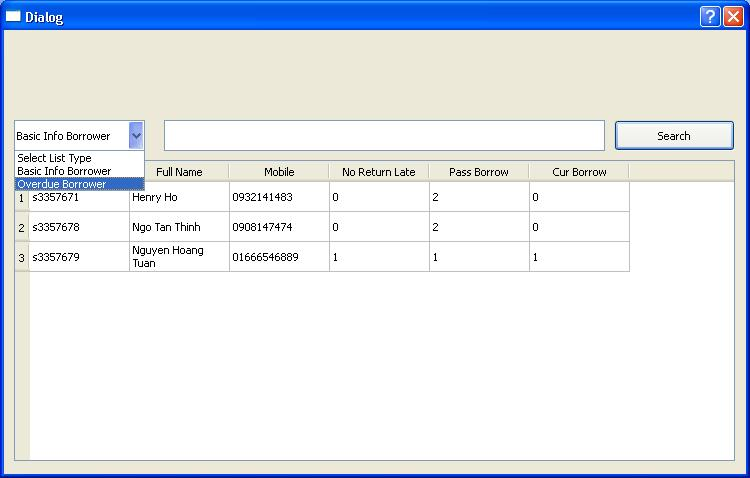

INTRODUCTION
This report will present you a way to develop a Multimedia Management System. For one of the most important part, the report will give some ideas on how to set up and run a system. Recently, this system is only compatitable with Windows but it is going to be a cross-platform system: Window, Mac and Linux. Next, it will be the implementation part, which contains 3 sub menus: UML Diagrams, Data Structures, and Algorithm. Basically, this part would give you ideas of some needed functionalities a collection system should have. Finally, it is the part that our development team can show what we have done to make our system one of the best fit in your organization.
PROJECT REFERENCE
| COSC2131 - Programing Using C++ | |
| Assignment Number: | 2 |
|---|---|
| Due Date: | December 25th, 2013 |
| Assignment Name: | Multimedia Library collections and services System |
| Program's Name: | HT MultiCollection Management System (HT-MMS) |
| Lecturer: | Ashok Kumar Veerasamy |
| Group Number: | 6 |
| Members: |
|
HOW TO BUILD/INSTALL
IMPLEMENTATION
UML Diagram
Figure 1: UML Diagram of a system
For this system, we have used QT, one of the engines for developing GUI in C++, as our main engine. Obviously, it is going with the MVC pattern. Therefore, it should be easy to maintain or expand the system for future usage. From the figure above, it somehow shows some basic classes within a system and how they interact with each other. There is a file which name is main "mainwindow.cpp", will take care almost all activities of the system. It will play a role as the manager, which will invoke methods/functions for a particular action. Moreover, it does store 3 main lists that will be using in any actions: borrowers, cols (stands for collections) and copies (a copy of a collection). For more information about classes/methods, please follow the following path Assignment2/htmland run the "index.html" file. Notice: these html files auto-generated by Doxygen
Figure 2: Example of Doxygen
Data Structure
For this part, it will not only mention about data structure but also about algorithm, files I/O.
- Data structure will be the first thing to be mentioned relatively. For C++, there are three
types of containers: list, deque, and vector but list is mostly used in the system. For other professional developers, they would choose deque as the main container no matter what. For us, as amature developers,
we chose list instead of vector and deque because of some basic reasons. Firstly, by that time, the concept of deque container does not appear in our minds so that is the reason why we did not use it.
Both vector and list do have its own advantages and disadvantages. In my opinion, list is way better than vector in the system. The program need to make a lot of insertions/deletions of elements in the container, either end, or
in the middle of it. By using list, the program does not waste as much memory as the vector need to add/remove element at the specific index. As far as we known from the research, list does allow to the program to iterate through it
after inserting/removing elements. Moreover, you can always keep track on the node before and after the chosen node. Beside list, we also use QList which is included in QT Library,
- Algorithm will be the next topic. Instead of setting them up manually, we have included a standard library which is 
Figure 3: Calculating Julian Day Function

Figure 4: Convert to lowercase function
- For files I/O, we have used ifstream for reading all data from files to load it into the database and ostream to write data back to files after every progress. These libraries are very common that there are tutorials about it on C++ Resource Network
The code fragment shown below is just a simple example of how to write/read from files

Figure 5: Read/Write data to file
ADDITIONAL FEATURES
Interactive Menu
Instead of developing it with the CUI, we has chosen to develop with GUI. User can interact with the program directly by just clicking, moving. Everything is displayed neatly and simply. Some examples is shown below:
Figure 6: Main menu GUI
Figure 7: Add New Borrower GUI
Figure 8: Add New Collection GUI
Figure 9: Report GUI
Figure 10: Menu Bar and Shortcut
Print Report
In order to satisfy all needs, a program also supports users to print out reports of all different types: borrowers, collections, and so on. Before printing out the report, users are able to preview it first by pressing "Preview" button. After deciding the preview is actually the one a user want, press "ESC" button to go back and press "Print" button to start the printing process. An example is shown below.
Figure 10: Printing GUI
Save Report
Press Save When viewing Report of collection, copies of collection and borrower
Project will generate a save dialog to save file as txt file
Database - MySql
Recently, there are variety of database management systems that developers can use to store application's data such as, mysql, sqlite, postgresql, and so on. MySQL and SqLite are the first two that came up
in our minds when we start to make a decision. Why? We have been using for a long time and they are quite easy to use. After throwing a big debate, MySql is finally the best fit with the system. In our point of view
sqlite is more vulnerable than mysql because it is a portable database management system. Since SqLite is portable, the database file obviously would be stored with the source code. In case that folder is in bad people's hands
they can all see data within a file by using free database readers such as sqliteman ... With MySql, there is no concern about that problem because it is protected with a password.
In this program, we use a mysql connector to connect it with MySql server. If the program is first installed in a organization's computers, it will automatically create a schema (mcdb), tables(borrower, multicollection, collection, ...)
, and some example data, which can be used for testing. The default account: Username: root & Password: dhis
Sorting
As required, users will be able to sort some specific elements with the table. For this system, users are able to sort any type of the table, either in the ascending or descending order. All users need to do is clicking on the title of each column.
Searching
Users are able to search a list by different types
CITATION
- http://www.qtforum.org/article/27157/how-to-creat-open-save-dialog-with-qt-creator.html
- http://harmattan-dev.nokia.com/docs/platform-api-reference/xml/daily-docs/libqt4/gettingstartedqt.html
- http://answers.yahoo.com/question/index?qid=20120927094228AAagMFB
- http://dev.mysql.com/doc/refman/5.1/en/connector-cpp-examples-complete-example-2.html
- http://qt-project.org/forums/viewthread/29391
- http://qt-project.org/doc/qt-4.8/printing.html
- http://www.dazzle.plus.com/linux/Qt4/part12.htm
- http://qt-project.org/doc/qt-4.8/widgets-groupbox.html
- http://msdn.microsoft.com/en-us/library/ms646942%28VS.85%29.aspx
- http://qt-project.org/forums/viewthread/328/